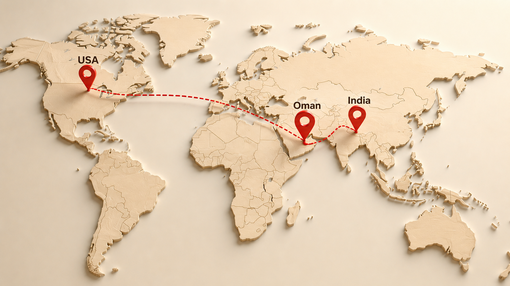

ABOUT ME
CREDENTIALS
8 AI & Multi-Agent Certifications
Certified Public Accountant — Illinois
Chartered Financial Analyst Program
Kelley Business School
Magna Cum Laude
Accounting & Finance
TRACK RECORD
THE JOURNEY

Born with curiosity. Raised with discipline.
Grew up navigating cultures before navigating deal structures.
Financial Consultant for ~9 years at PwC Chicago. Accounting and Finance Major at Kelley School of Business (Magna Cum Laude).
Skydiver, hiker, world traveler, and home chef. I chase experiences that push my limits — whether that's jumping out of a plane in New Zealand or navigating a rainforest trail in the Pacific Northwest.
Growing up across three continents taught me to adapt fast, communicate across cultures, and stay comfortable with ambiguity. I bring that same adventurous energy to my work — bias toward action, zero fear of the unknown.